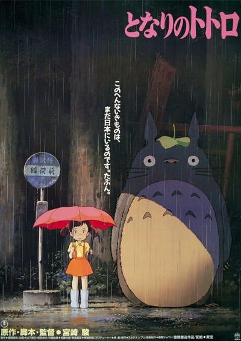
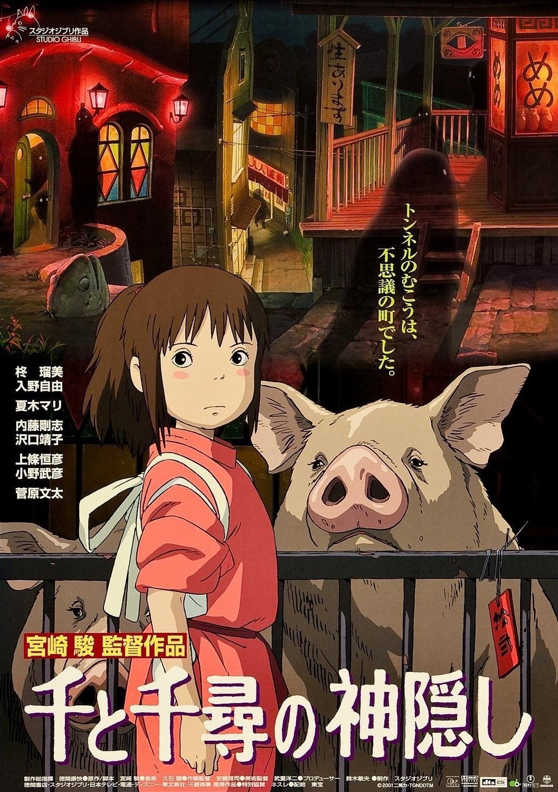
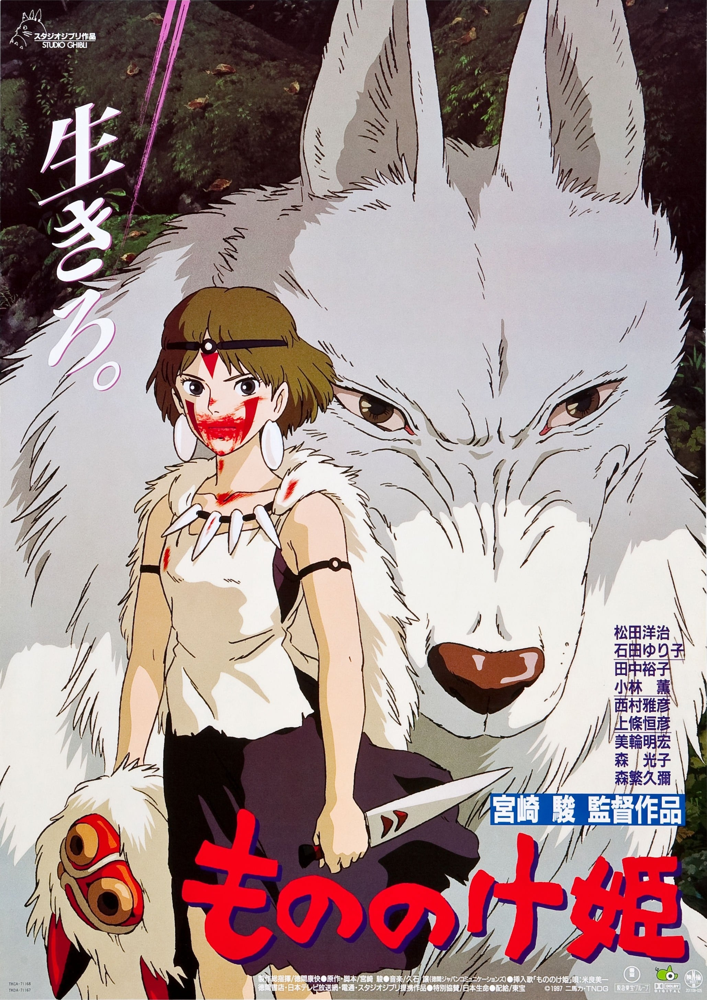
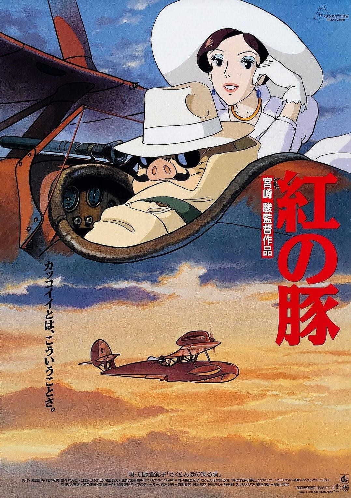
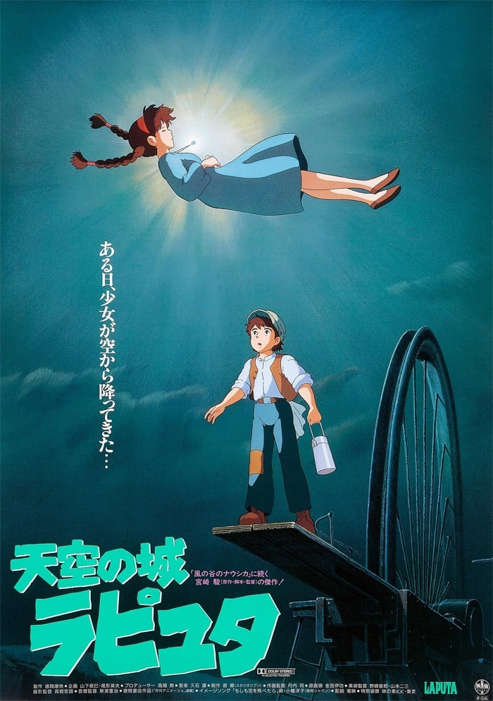
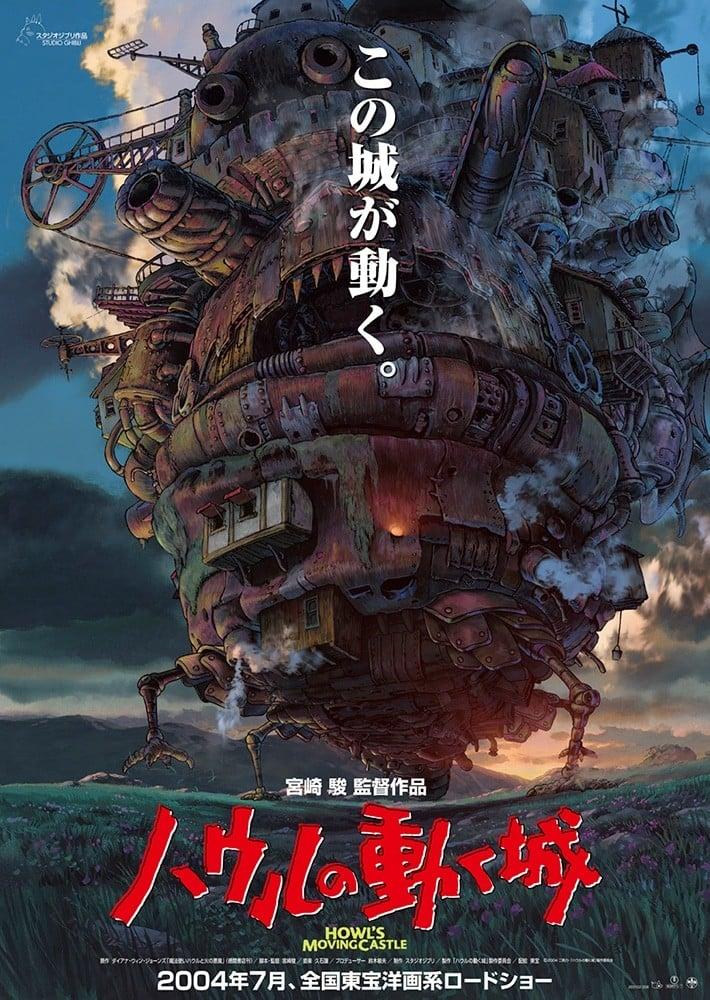

名单共识
同时出现在高分动漫排行榜、高分动画电影Top、吉卜力工作室作品。

8.2「龙猫」（1988）是一部剧场版，由宫崎骏执导，制作吉卜力，类型包括治愈、奇幻，评分8.2，在本站出现在9份片单中，例如高分日漫推荐、高分动画剧场版推荐、高分治愈系动漫推荐。页面只做片单对照，不提供播放。本片是對日本鄉村生活的迷人及節奏緩慢的描繪。故事背景設定於1958年（昭和33年），一位大學教授和他的兩個女兒搬進一個森林附近的一所舊房子，因為他的妻子染上了結核病，在附近的一所醫院康復中。他的女兒們發現了「煤炭屎」，她們又名「煤炭屎鬼」。
按共享片单数排序，用来找和「龙猫」一起出现的高分动漫。

8.6
8.3
8.0
8.5
7.8 8.3
8.3